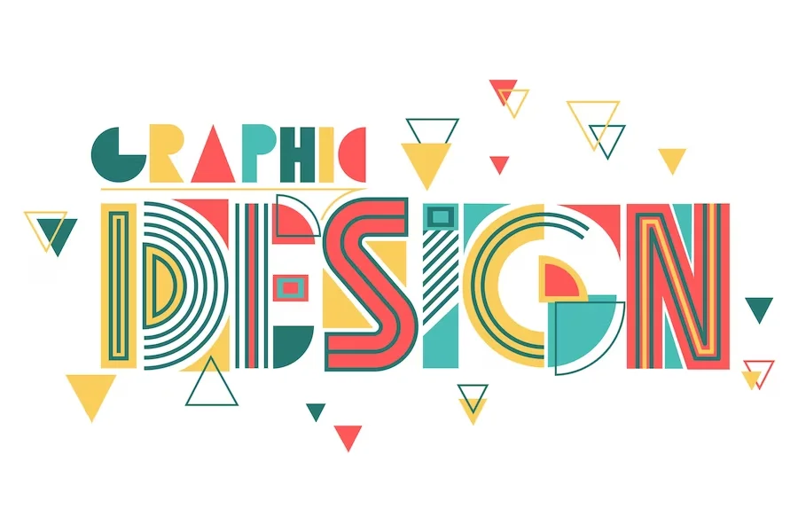
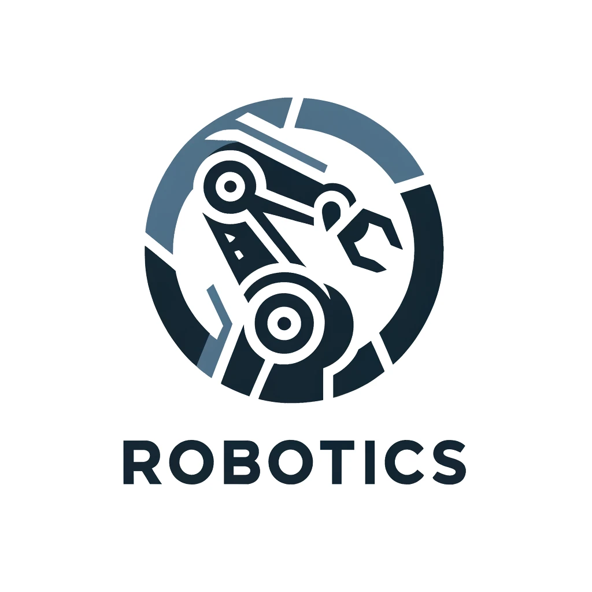

All your digital needs...covered.

Graphic design
As a graphic designer, I specialize in creating visually compelling designs that effectively communicate brand messages through digital art, typography, and layout techniques.
Web Development
As a web developer, I excel in crafting responsive, user-friendly websites and applications using modern technologies and best practices for front-end and back-end development.
App Development
As a mobile application developer, I adeptly build seamless, cross-platform mobile apps using Kotlin for native Android development and Dart with Flutter for high-performance, natively compiled applications across both Android and iOS.

Robotics Education
As a robotics educator, I skillfully teach the integration of mechanical design, electronic systems, and programming to students, fostering their ability to create and innovate in the field of robotics.